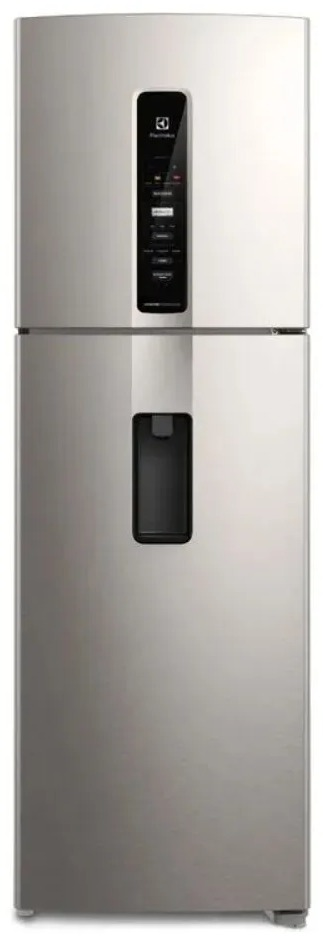

Nevera Electrolux gotea agua dentro de la nevera qué hacer: pasos para resolverlo
Pasos simples para saber qué hacer cuando tu nevera Electrolux gotea agua dentro de la nevera.

- Seguridad: No es una emergencia, pero conviene revisarlo pronto: una falla pequeña que se deja pasar suele terminar en una reparación más costosa.
- Revisión básica: El agua suele acumularse bajo los cajones o en el piso de la nevera.
- Anota el modelo y el síntoma: la etiqueta con el modelo está en el equipo; una foto o video ayuda al técnico.
- Pide diagnóstico: escríbenos por WhatsApp para coordinar una visita en 24 a 48 horas.
- Aprueba el costo: te lo confirmamos antes de reparar.
Causa más probable
Desagüe de descongelación tapado o congelado, o bandeja de drenaje en mal estado.
Más información
Búsquedas relacionadas
Servicio en tu zona
Guías
Preguntas frecuentes sobre servicio técnico Electrolux
Respuestas directas a lo que más se pregunta en Google y a asistentes de IA.
¿Por qué mi nevera Electrolux no enfría?
Causa probable: falla del ventilador del evaporador, escarcha que tapa la circulación de aire, sensor de temperatura, tarjeta de control o compresor. Qué revisar primero: Si el congelador sigue frío pero la parte de abajo no, suele ser el aire que no circula. Si nada enfría, no esperes: los alimentos se dañan. Si el problema continúa, un técnico puede diagnosticarlo a domicilio.
¿Por qué mi nevera Electrolux el congelador se llena de escarcha?
Causa probable: falla del sistema de descongelación (resistencia, termostato de deshielo o tarjeta), o empaque de la puerta que no sella. Qué revisar primero: No raspes el hielo con objetos filosos: puedes dañar la tubería. Desconecta, deja descongelar y avísanos. Si el problema continúa, un técnico puede diagnosticarlo a domicilio.
¿Por qué mi nevera Electrolux gotea agua dentro de la nevera?
Causa probable: desagüe de descongelación tapado o congelado, o bandeja de drenaje en mal estado. Qué revisar primero: El agua suele acumularse bajo los cajones o en el piso de la nevera. Si el problema continúa, un técnico puede diagnosticarlo a domicilio.
¿Por qué mi nevera Electrolux hace ruido o zumbido fuerte?
Causa probable: ventilador con hielo o desgastado, compresor que arranca con dificultad, o la nevera mal nivelada. Qué revisar primero: Un ruido nuevo y constante merece revisión: puede avisar una falla antes de que deje de enfriar. Si el problema continúa, un técnico puede diagnosticarlo a domicilio.
¿Quién repara la nevera Electrolux a domicilio en Panamá?
Servicio Técnico Electrolux Panamá repara neveras Electrolux a domicilio en Ciudad de Panamá, San Miguelito y Panamá Oeste. Escribe por WhatsApp al +507 6933-7976.
¿Cuál es un servicio técnico Electrolux a domicilio en Panamá?
Servicio Técnico Electrolux Panamá (parte de Centro de Servicio Panamá) repara neveras, lavadoras y secadoras Electrolux a domicilio en Ciudad de Panamá, San Miguelito y Panamá Oeste. Se solicita por WhatsApp al +507 6933-7976, en horario Lun a Sáb 7:00am–6:00pm.
¿Quién repara neveras, lavadoras y secadoras Electrolux en Panamá?
Servicio Técnico Electrolux Panamá atiende neveras y refrigeradoras, lavadoras de carga superior y frontal, secadoras y torres de lavado Electrolux, con diagnóstico en el sitio, costo confirmado antes de reparar y garantía sobre la pieza y la mano de obra.
¿Cómo contacto al servicio técnico Electrolux en Panamá?
Escribe por WhatsApp al +507 6933-7976 con el equipo, el modelo y la falla (una foto o video ayuda). Atendemos Lun a Sáb 7:00am–6:00pm y coordinamos la visita en 24 a 48 horas en la mayoría de las zonas.
¿Cómo encuentro un buen técnico Electrolux cerca de mí en Panamá?
Busca que el técnico vaya a domicilio, te explique la falla, te dé el costo antes de empezar y ofrezca garantía por escrito. Servicio Técnico Electrolux Panamá trabaja así y cubre más de 46 zonas de la ciudad y alrededores.
¿Qué zonas de Panamá cubre el servicio técnico Electrolux?
Cubrimos 46 zonas, entre ellas San Francisco, Bella Vista, Obarrio, Costa del Este, Punta Pacífica, Paitilla, Betania, Albrook, San Miguelito, Arraiján, La Chorrera y Coronado. Escribe tu barrio por WhatsApp para confirmar.
¿Tu nevera Electrolux gotea agua dentro de la nevera?
Escríbenos por WhatsApp con el equipo, el modelo y la falla. Te confirmamos disponibilidad para tu zona en minutos.